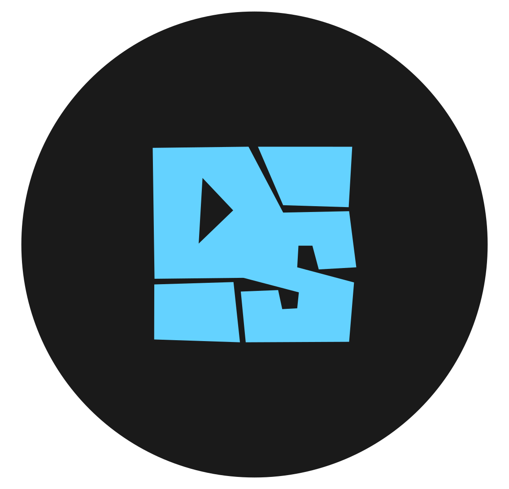
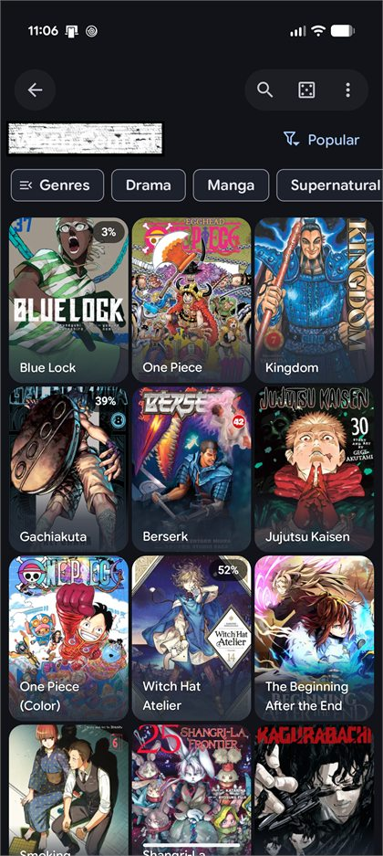

Library that keeps its place
Favorites, categories, history, per-chapter progress, bookmarks, reading stats, and tracking tools keep the sprawl readable.

DropSauceFree, open-source, Android-first
A lightweight manga reader with a Material 3 Expressive pulse: fast shelves, smooth reading, real extensions, optional Drive sync, and no account just to read.
Built for readers, not funnels. DropSauce stays close to the Android ecosystem and keeps your library on your device unless you decide to sync it.
Get the APKThe app, not a mockup
DropSauce is a clean shell for the reading life: browse through sources you add, save what matters, read without clutter, and keep settings powerful without making them noisy.

What it handles
Favorites, categories, history, per-chapter progress, bookmarks, reading stats, and tracking tools keep the sprawl readable.
Add the source and extension repositories you trust. DropSauce ships with no built-in manga and does not host content.
Configurable reading behavior, cleaner controls, haptics, downloads for offline reading, and PDF import through CBZ conversion.
Home screen widgets, app lock with biometrics or device credentials, in-app updates, and a modern Compose-powered surface.
A simple rhythm
Bring in the external libraries or repositories you choose, then browse and filter them from one Android app.
Save favorites, sort categories, bookmark pages, and let DropSauce remember history and reading progress.
Use Google Drive sync, local backup and restore, or keep everything local. The app is useful either way.
Your data, your Drive
When enabled, DropSauce uses Google Sign-In and Drive API access only to manage its own sync file. Your library data moves directly between your device and your Google Drive account, not through a DropSauce server.
Read the privacy detailsOpen source and clear boundaries
DropSauce is GPLv3 software shaped by the open-source Android manga reader ecosystem. It is a reader and organizer for sources supplied by users; it is not affiliated with any content provider or rights holder.
Quick answers
No. DropSauce includes no built-in manga, comics, or media. Sources are external libraries or repositories that users add themselves.
Yes. DropSauce is free and open source under the GNU GPLv3 license.
DropSauce supports in-app updates, and APKs are also published through GitHub Releases.
Yes. You can use optional Google Drive sync or the local backup and restore system.
Ready when you are
Download the latest APK from GitHub Releases. Android may ask you to allow installs from your browser or file manager.